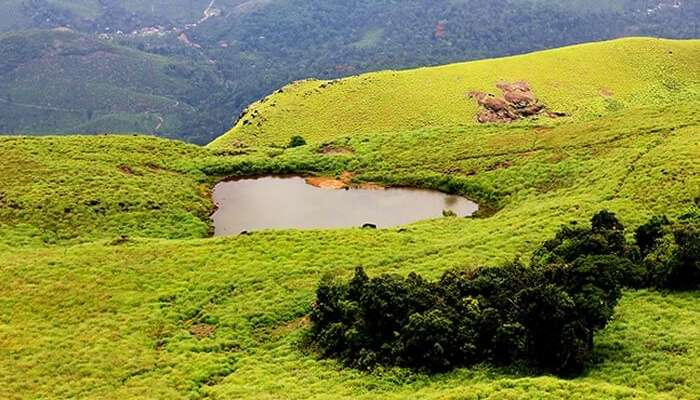

Chembra Peak

Ghat View Point

Muthanga Wildlife Sanctuary
Edakkal Caves

Wayanad is a rural district in Kerala state, southwest India. In the east, the Wayanad Wildlife Sanctuary is a lush, forested region with areas of high altitude, home to animals including Asiatic elephants, tigers, leopards and egrets. In the Ambukuthi Hills to the south, Edakkal Caves contain ancient petroglyphs, some dating back to the Neolithic age.This area is famous for its large amount of camping and trekking trails, breathtaking waterfalls, caves, bird watching sites, flora, fauna and an overall plethora of magnificent sights. This area has been a tourist favourite over the years.